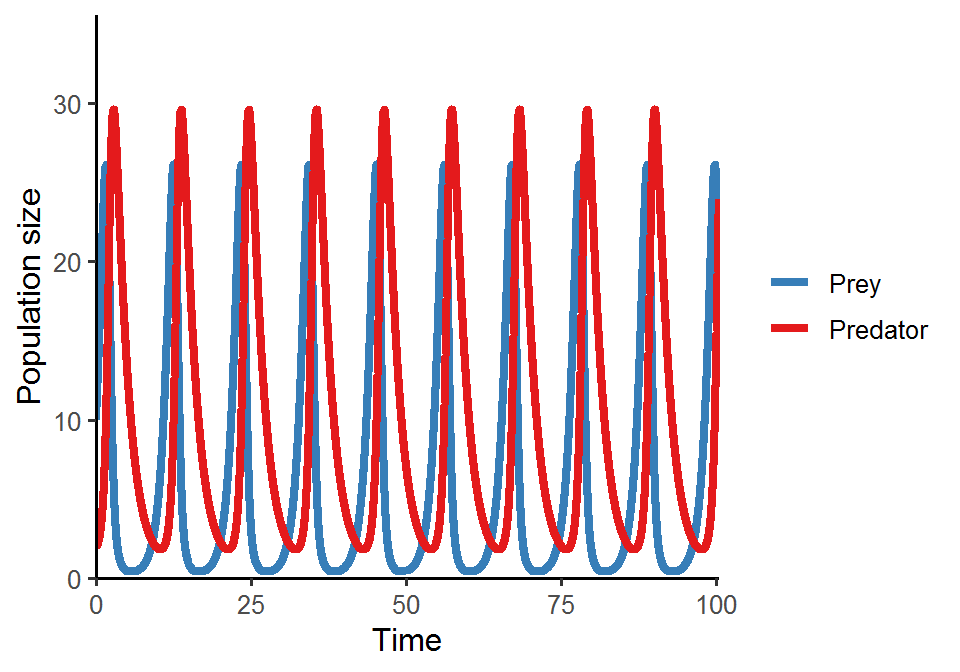
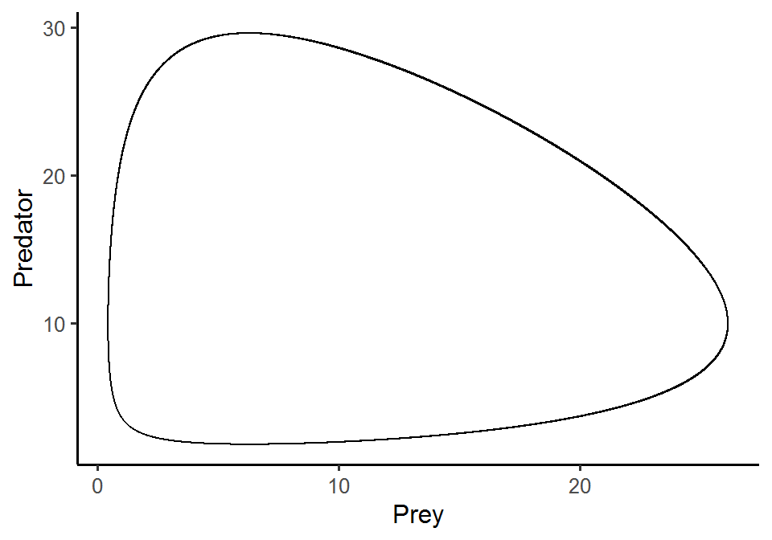

Week 10
Modern coexistence theory & Lotka-Volterra model of predator-prey interactions (1)
Lecture in a nutshell
- Modern coexistence theory
- From mutual invasion analysis for coexistence: \(\frac{\alpha_{AB}}{\alpha_{BB}}<\frac{r_{A}}{r_{B}}<\frac{\alpha_{AA}}{\alpha_{BA}}\)
- Multiplying all terms by \(\sqrt{\frac{\alpha_{BB}\alpha_{BA}}{\alpha_{AA}\alpha_{AB}}}\):
\(\sqrt{\frac{\alpha_{AB}\alpha_{BA}}{\alpha_{AA}\alpha_{BB}}}<\frac{r_{A}}{r_{B}}\sqrt{\frac{\alpha_{BB}\alpha_{BA}}{\alpha_{AA}\alpha_{AB}}}<\sqrt{\frac{\alpha_{AA}\alpha_{BB}}{\alpha_{AB}\alpha_{BA}}}\)
- \(\sqrt{\frac{\alpha_{AB}\alpha_{BA}}{\alpha_{AA}\alpha_{BB}}}\): niche overlap (\(\rho\)) (niche difference: \(1-\rho\))
- \(\frac{r_{A}}{r_{B}}\): demographic ratio
- \(\sqrt{\frac{\alpha_{BB}\alpha_{BA}}{\alpha_{AA}\alpha_{AB}}}\): sensitivity to competition
- \(\frac{r_{A}}{r_{B}}\sqrt{\frac{\alpha_{BB}\alpha_{BA}}{\alpha_{AA}\alpha_{AB}}}\): fitness ratio/competitive hierarchy (\(\frac{K_{A}}{K_{B}}\))
- Coexistence: fitness ratio \(\frac{K_{A}}{K_{B}}\) should be bounded between \(\rho\) and \(\frac{1}{\rho}\)
- Competition outcomes:
- Lotka-Volterra model of predator-prey interactions
- Model derivation:
\(\begin{align}\frac {dN}{dt} = g(N)-f(N,P)\end{align}\\\)\(\begin{align}\frac {dP}{dt} = ef(N,P)-d(P)\end{align}\)
- \(g(N)\): prey growth
- \(f(N,P)\): prey consumed by predator
- \(ef(N,P)\): prey conversion into predator
- \(d(P)\): predator mortality
- Functional response \(f(N,P)\):
- Type I: \(f(N,P) = aN\)
- Type II: \(f(N,P) = \frac{aN}{1+ahN}\) (h is the handling time) or \(\frac{uN}{K_{m}+N}\)
- Type III: \(f(N,P) = \frac{aN^{2}}{1+ahN^{2}}\) or \(\frac{uN^{2}}{K_{m}+N^{2}}\)
- Various model forms:
- Exponential growth of prey + Type I functional response
- Logistic growth of prey + Type I functional response
- Exponential growth of prey + Type II functional response
- Logistic growth of prey + Type II functional response
- Model derivation:
- Model 1. Exponential growth of prey + Type I functional response
- Model equations:
\(\begin{align}\frac {dN}{dt} = rN-aNP\end{align}\\\)\(\begin{align}\frac {dP}{dt} = eaNP-dP\end{align}\)
- The equilibrium points \((N^{*}, P^{*})\):
- \(E_{0} = (0, 0)\)
- \(E_{NP} = (\frac{d}{ea}, \frac{r}{a})\)
- Local stability analysis:
- \(E_{0}\)
- \(J_{E_{0}} = \begin{vmatrix}r & 0 \\ 0 & -d\end{vmatrix}\)
- \(\lambda's = r\) and \(-d\) (one positive and one negative)
- Unstable
- \(E_{NP}\)
- \(J_{E_{NP}} = \begin{vmatrix}0 & -a\frac{d}{ea} \\ ea\frac{r}{a} & 0\end{vmatrix}\)
- \(\lambda's = \sqrt{rd}*i\)
- Real part is zero (pure imaginary number): the equilibrium is a center; sensitive to non-linear terms/initial conditions)
- Lyapunov function (global stability analysis of the equilibrium) is useful for predicting the system dynamics in the situation where all real parts of the eigenvalues are zero
- In this case, the dynamics are neutral cycles
- \(E_{0}\)
- Model equations:
Lab demonstration
In this lab, we are going to analyze the classic Lotka-Volterra predator-prey model:
\(\begin{align}\frac {dN}{dt} = rN-aNP\end{align}\\\)
\(\begin{align}\frac {dP}{dt} = eaNP-dP\end{align}\)
Please simulate the model using the parameter set (N = 10, P = 2, r = 1.0, a = 0.1, e = 0.8, d = 0.5) and plot the population trajectories of predator and prey over time. Also show their population dynamics in the state-space diagram.
What will happen if you add a perturbation to the system (i.e., change the initial conditions)? Try out different values of N and P and visualize the differences in the state-space diagram.
library(tidyverse)
library(deSolve)
### Model specification
LV_predation_model <- function(times, state, parms) {
with(as.list(c(state, parms)), {
dN_dt = r*N - a*N*P
dP_dt = e*a*N*P - d*P
return(list(c(dN_dt, dP_dt)))
})
}
### Model parameters
times <- seq(0, 1000, by = 0.005)
state <- c(N = 10, P = 2)
parms <- c(r = 1.0, a = 0.1, e = 0.8, d = 0.5)
### Model application
pop_size <- ode(func = LV_predation_model, times = times, y = state, parms = parms)
### Visualize the population dynamics
# (1) population trajectories
pop_size %>%
as.data.frame() %>%
pivot_longer(cols = -time, names_to = "species", values_to = "N") %>%
ggplot(aes(x = time, y = N, color = species)) +
geom_line(size = 1.5) +
theme_classic(base_size = 12) +
labs(x = "Time", y = "Population size") +
scale_x_continuous(limits = c(0, 100.5), expand = c(0, 0)) +
scale_y_continuous(limits = c(0, max(pop_size[, -1])*1.2), expand = c(0, 0)) +
scale_color_brewer(name = NULL, palette = "Set1", labels = c("Prey", "Predator"))
# (2) state-space diagram
pop_size %>%
as.data.frame() %>%
ggplot(aes(x = N, y = P)) +
geom_path() +
theme_classic(base_size = 12) +
labs(x = "Prey", y = "Predator")